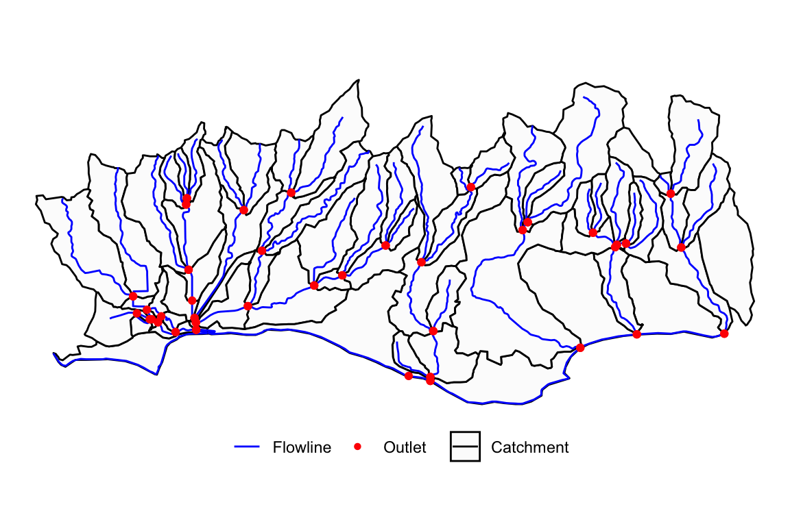
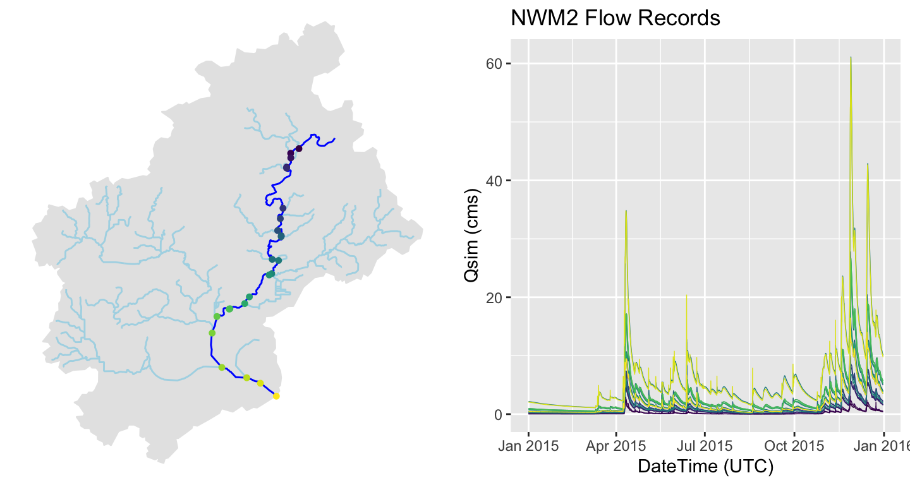

NWM channel output is indexed by NHD COMID, or NWIS site ID. Identifying the relevant IDs is not always easy. Tools exist in dataRetrieval and nhdplusTools to aid in (1) location and (2) area based feature discovery.
NHD COMIDs can be determined from point locations as the NHD catchment containing the requested point. Here we find the COMID associated with a specific lat/lon.
library(nwmTools)
library(AOI)
library(dataRetrieval)
library(dplyr)
library(nhdplusTools)
# Find COMID
glimpse(findNLDI(location = c(-119.8276, 34.43583)))
#> Rows: 1
#> Columns: 4
#> $ sourceName <chr> "NHDPlus comid"
#> $ identifier <chr> "17595383"
#> $ comid <chr> "17595383"
#> $ geometry <LINESTRING [°]> LINESTRING (-119.8323 34.43...nhdplusTools::get_nhdplus(...) can accept polygon features as a search domain and will return all NHD flowlines intersecting the input area. From theses, COMIDs can be extracted.
# Find COMIDS
glimpse(get_nhdplus(AOI)$comid)
#> int [1:74] 17595337 17596193 17596187 17596197 17596185 17595333 17596125 17595439 17596153 17596123 ...Analogous functionality for finding USGS NWIS site IDs is provided with nhdplusTools::get_nwis. This function only returns NWIS sites that record streamflow (USGS parameter code ‘00060’) and are collocated with an NHD catchment represented in the NWM.
The NHDPlusV2 data model loosely conforms to the HY_Features Conceptual Model with a mapping shared here. nhdplusTools provides the ability to retrieve catchment-divide, flowline, and outlet representations of a hydrologic landscape, for an AOI.
# Return catchments
catch = nhdplusTools::get_nhdplus(AOI, realization = "catchment")
# Return flowlines
fl = nhdplusTools::get_nhdplus(AOI, realization = "flowline")
# Return outlets
out = nhdplusTools::get_nhdplus(AOI, realization = "outlet")
Lets look at one integrative example. The aim is to identify a self-contained watershed and extract reanalysis records along the mainstem for 2015. The dataRetrival Network Linked Data Index can be used to define a starting point, and traverse the hydrographic network to find the upstream (or downstream) geometries and indexed elements. Once the COMIDs are identified, nwmTools can be used to extract the relevant streamflow forecasts.
loc = findNLDI(nwis = '05428500',
nav = c("UT", "UM"),
find = c("flowline", "basin"))
# Find 2015 Flows along the Mainstem
nldi_flows <- readNWMdata(comid = loc$UM_flowlines$nhdplus_comid,
startDate = "2015-01-01",
endDate = "2015-12-31")